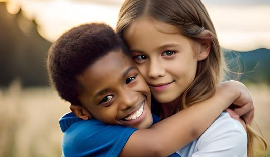
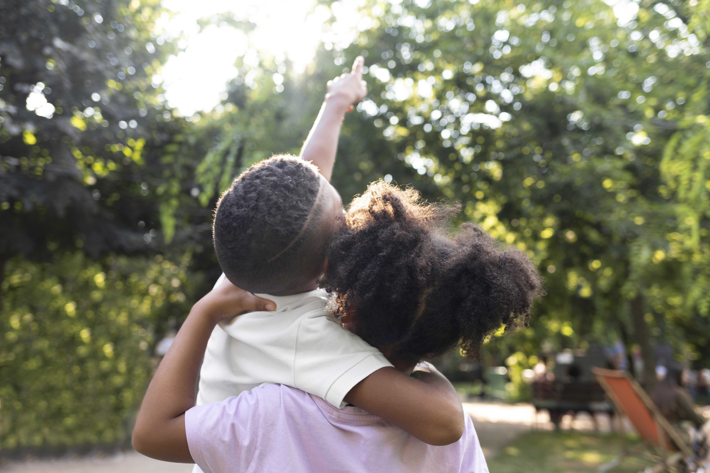

Já teve vontade de ajudar um projeto voluntário mas ficou sem saber o que poderia fazer?



GAA AFETO MOSSORÓ
Já teve vontade de ajudar um projeto voluntário mas ficou sem saber o que poderia fazer?
Os GAA são grupos formados pela sociedade civil que trabalham voluntariamente para a divulgação de uma nova cultura para as adoções.As ações dos GAA são fundamentadas nas leis e buscam, primeiramente, prevenir o abandono, auxiliar na reintegração familiar das crianças e adolescente e, se isso não for possível, contribuir para que os pequenos tenham, o quanto antes, um lar que os acolha bem e de forma definitiva. Além disso, o GAA auxilia no preparo dos que pretendem adotar, acompanha os pais adotivos no pós-adoção, conscientiza a sociedade sobre a garantia do direito à convencia familiar das crianças e adolescentes e, ainda, ajuda na busca ativa de famílias para a adoção de crianças fora do perfil comumente desejado pelos adotantes (crianças de mais idade, com algum tipo de deficiência, grupos de irmãos ou adoções interrraciais).
Não precisa participar apenas os que pensam em adotar ou já adotaram. Apesar de os que já passaram pelo processo da adoção serem muito importantes nessa discussão, podem também participar todos os que querem colaborar na conscientização e mobilização da sociedade em torno da adoção e da garantia do direito à convivência familiar das crianças e adolescentes, especialmente daqueles que se encontram nos abrigos, a espera de um lar que os ame e proteja..